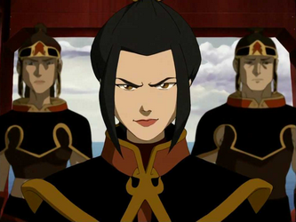
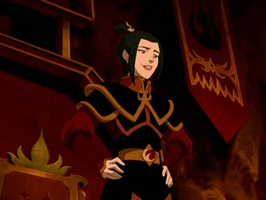
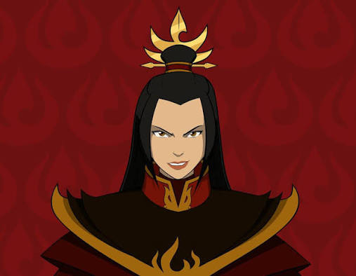

Nome: Azula
Nacionalidade: Nação do Fogo
Idade: 14 anos durante Avatar: A Lenda de Aang
Filiação: Filha do Senhor do Fogo Ozai e da Princesa Ursa
Aparições: Série principal (Livro 1, 2 e 3) e HQs como The Search, Smoke and Shadow e Imbalance
Gênero: Feminino
Cor dos olhos: Dourado intenso
Cor do cabelo: Preto
Altura: Aproximadamente 1,65 m
Características marcantes: Uniforme militar da Nação do Fogo, expressão séria e postura imponente. Suas chamas possuem coloração azul, característica rara entre os dobradores de fogo.
Prodígio Estratégico: Prodígio Estratégico: Considerada uma das dobradoras mais talentosas de sua geração, combina inteligência, velocidade e precisão em combate.
Controle e Autoridade: Utiliza medo, manipulação e domínio psicológico para manter controle sobre aliados e inimigos.
Perfeccionismo Extremo: Foi criada para ser impecável, desenvolvendo obsessão por perfeição e domínio absoluto.
Instabilidade Psicológica: A pressão familiar e isolamento emocional levam à sua deterioração mental ao longo da história.

Azula nasceu como princesa da Nação do Fogo, filha do Senhor do Fogo Ozai e da Princesa Ursa. Desde muito pequena demonstrou um talento extraordinário para a dobra de fogo, impressionando mestres e conquistando a admiração do pai.
Enquanto seu irmão Zuko era frequentemente criticado, Azula recebia elogios constantes por sua disciplina e habilidade. Essa diferença de tratamento fortaleceu sua competitividade e sua crença de que apenas o poder garante respeito.
Treinada desde a infância para servir à Família Real, tornou-se uma comandante militar ainda muito jovem, participando de missões estratégicas durante a Guerra dos Cem Anos e assumindo responsabilidades normalmente destinadas a adultos.

Dobra de Fogo Azul: Azula é uma das poucas dobradoras capazes de gerar chamas azuis, extremamente quentes e concentradas.
Relâmpago: Domina a geração de relâmpagos, técnica avançada da dobra de fogo.
Combate de Elite: Capaz de derrotar múltiplos oponentes ao mesmo tempo com velocidade e precisão extrema.
Estratégia Militar: Atuou como comandante de elite da Nação do Fogo durante a Guerra dos Cem Anos.
Azula cresceu acreditando que perfeição era uma obrigação. Filha favorita de Ozai, foi educada para se tornar a sucessora ideal da Família Real da Nação do Fogo, desenvolvendo habilidades excepcionais de combate e uma mente estratégica incomparável. Durante a Guerra dos Cem Anos, liderou missões importantes e perseguiu o Avatar Aang ao lado de Mai e Ty Lee, conquistando cidades e assumindo posição de destaque no exército graças à sua inteligência e disciplina.
Por trás da confiança absoluta existia uma jovem marcada pela pressão constante e pela dificuldade de criar vínculos verdadeiros. Acostumada a controlar tudo ao seu redor, Azula passou a desconfiar até mesmo de seus amigos mais próximos. A traição de Mai e Ty Lee, somada ao afastamento de sua mãe, contribuiu para um profundo desgaste emocional. No confronto final da série, sua busca obsessiva pela perfeição leva a um colapso psicológico, resultando em sua derrota para Zuko e Katara. Sua história mostra que poder e talento não substituem confiança, afeto e equilíbrio emocional, tornando-a uma das personagens mais complexas do universo Avatar.
Ir para página do Ozai
Ir para página do Zuko
Ir para página Principal